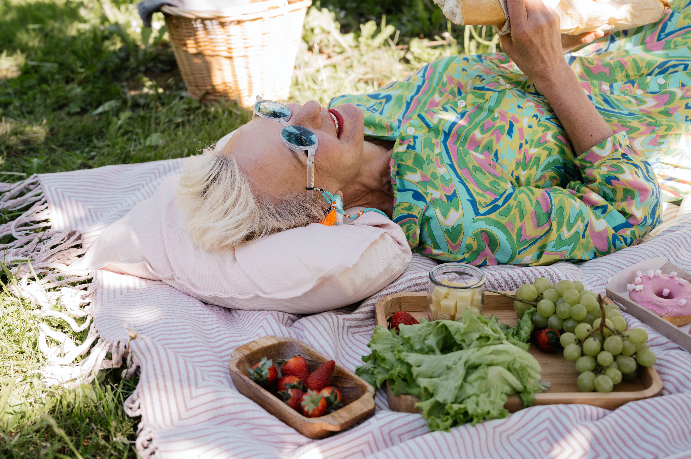

Physical mobility is the essential factor of our day to day life. Without being mobile every action becomes more miserable. The ability to move around is a natural action of every human being. It plays a fundamental role in our overall health and well-being. Regular physical activity and mobility contribute to better physical health. It helps to improve cardiovascular fitness, strengthen muscles and bones, maintain a healthy weight, and reduce the risk of chronic diseases such as heart disease, diabetes, and certain types of cancer. Physical mobility also enhances flexibility, coordination, and balance, reducing the likelihood of falls and injuries, especially in older adults.Physical mobility has a positive impact on mental well-being. Engaging in regular physical activity releases endorphins, which are natural mood-boosting chemicals in the brain. It reduces symptoms of depression and anxiety, enhances cognitive function, and improves overall mental clarity and focus. Physical mobility also provides opportunities for stress relief and promotes better sleep patterns.
. Independence and Quality of Life: Maintaining physical mobility allows individuals to remain independent and carry out daily activities without assistance. Being able to move freely enhances one's quality of life, enabling participation in hobbies, social engagements, and recreational activities. Physical mobility also supports functional independence as people age, promoting a higher degree of self-sufficiency and a greater sense of self-esteem and confidence.Studies consistently show that individuals who maintain an active lifestyle and good physical mobility tend to live longer and have a higher overall life expectancy. Regular physical activity contributes to a healthier cardiovascular system, better immune function, and improved metabolic health, all of which are associated with a reduced risk of premature death. Physical mobility is a crucial factor in preventing and managing chronic diseases. Regular exercise and movement can help prevent conditions such as obesity, type 2 diabetes, high blood pressure, and osteoporosis. For individuals already diagnosed with chronic diseases, physical activity and mobility can help manage symptoms, improve functional capacity, and enhance overall well-being.
Physical mobility plays a role in social interactions and community engagement. Being physically active allows individuals to participate in sports, recreational activities, and group exercises, fostering social connections and a sense of belonging. It provides opportunities for teamwork, cooperation, and the development of interpersonal relationships. Physical mobility has a positive impact on cognitive function and brain health. Research suggests that regular exercise and physical activity can improve memory, attention span, and overall cognitive abilities. Physical mobility promotes blood flow to the brain, stimulates the growth of new neurons, and enhances neural connectivity, all of which contribute to better cognitive performance.
Physical mobility is essential for maintaining good physical and mental health, promoting independence, enhancing quality of life, preventing chronic diseases, extending longevity, fostering social engagement, and improving cognitive function. By incorporating regular physical activity into our lives, we can experience the numerous benefits that physical mobility offers.
Tips to Lead an Active Lifestyle Forever:
Aging is a natural process that affects everyone, but it doesn't mean that you have to stop leading an active lifestyle. Staying active during old age is important for overall health and well-being. Here are some tips for staying active as you age:
